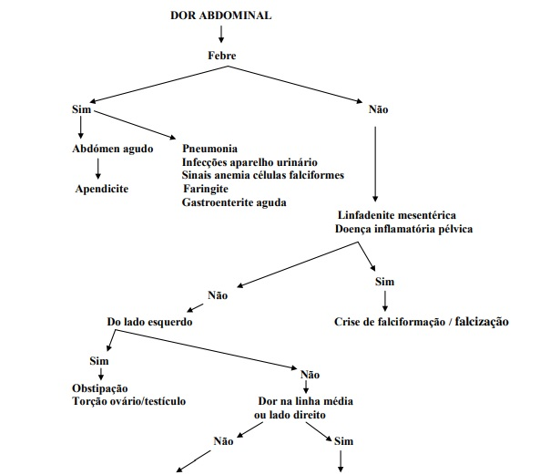
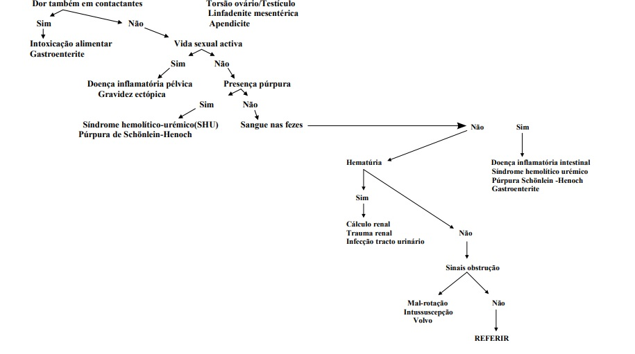

DOR ABDOMINAL AGUDA – abordagem inicial
Introdução:
Há várias particularidades no atendimento da criança com dor abdominal. No exame clínico evidenciando hematomas ou sinais de fratura óssea, afastar trauma acidental ou mesmo síndrome de maus tratos. A presença de febre no histórico ou durante o exame clínico orienta para a suspeita de infecção de trato urinário (ITU), gastroenterite, faringite, pneumonia e outras condições infecciosas. Palidez importante e dor abdominal podem ocorrer nas crises de falcização, assim como lesões de pele auxiliam o diagnóstico de púrpura de Henoch-Shönlein.
A localização epigástrica pode indicar doença péptica em fase aguda, assim como dor vaga periumbilical, que se intensifica em algumas horas e passa a ser localizada na fossa ilíaca direita, aponta para a necessidade de se descartar apendicite aguda. Dor no flanco e fossa ilíaca esquerda, acompanhada de história de constipação intestinal, orienta para impactação de fezes em ampola retal. A presença de sangue nas fezes acompanhado de dor abdominal pode fazer parte dos quadros de colite infecciosa, intussuscepção intestinal, doença inflamatória intestinal e púrpura de Henoch-Shönlein.
Litíase renal ou trauma renal em geral são acompanhados por hematúria, além do quadro de dor abdominal. Os processos agudos obstrutivos do trato intestinal com frequência apresentam-se com vômitos de intensidade variável e parada de eliminação de fezes. A etiologia da dor abdominal aguda é variável nas distintas faixas etárias.
Anamnese:
Aspectos a serem enfatizados na anamnese da criança com dor abdominal aguda.
Idade;
Comorbidades;
Cirurgias prévias;
Uso de medicações;
Quadro clínico de dor:
Fatores de melhora e piora da dor;
Tipo ou qualidade da dor (contínua, em cólica, aperto, pontada etc.);
Local de início e irradiação;
Gradação da dor (escala de 0 a 10);
Duração e repetição do quadro.
Febre;
Última refeição;
Hábito intestinal;
Diarreia;
Constipação;
Náuseas;
Vômitos;
Disúria
Exame Físico:
É extremamente valiosa a descrição da aparência geral do paciente. Sinais vitais, como: temperatura, pulso, pressão arterial, frequência respiratória e cardíaca, além de glicemia capilar, são fundamentais durante a avaliação da criança com dor abdominal aguda. As alterações dos sinais vitais pressupõem atendimento na unidade de emergência, descartando-se choque, desidratação, distúrbios hidroeletrolíticos e cetoacidose diabética. A ausência de ruídos hidroaéreos, acompanhado de distensão abdominal, pode indicar distúrbio metabólico grave ou quadro cirúrgico. O aumento dos ruídos hidroaéreos em quadros de dor abdominal é de ocorrência comum nas enteroinfecções e doença diarreica.
A inspeção do abdome visa observar o aspecto da pele (sufusões, petéquias, icterícia), distensão localizada ou difusa, presença de contrações visíveis. Para a criança que verbaliza, pede-se para que ela aponte a área de dor. Inicia-se a palpação do abdome de forma superficial e depois profunda, em geral, em área distante da região dolorosa. A palpação deve ser aprofundada gentilmente durante a inspiração, procurando-se observar intensidade da dor. Sinais de descompressão brusca orientam para irritação peritoneal, presente em especial nos casos de apendicite aguda. O toque retal, detectando a presença de massas fecais na ampola é um dado importante nos casos de impactação fecal ou em casos de abdome cirúrgico e abaulamentos da parede retal.
Etiologia:
Dor Abdominal Aguda de Causa Cirúrgica.
É prudente considerar qualquer dor abdominal aguda intensa e contínua, com duração superior a 4h, como potencialmente cirúrgica.
Procurar:
Sinais de irritação peritoneal: dor e defesa;
Chama-se a atenção para a delicadeza na palpação abdominal a fim de evitar exacerbação desnecessária do sofrimento na criança (apendicite aguda, perfuração do intestino, peritonite, trauma, etc);
Sinais de oclusão intestinal: vómitos, parada de eliminação de gases e fezes, silêncio abdominal ou hiper-peristaltismo (invaginação intestinal, volvo);
Presença de sangue nas luvas, ao toque retal;
Características do pulso;
Afecções cirúrgicas mais frequentes do abdome:
Apendicite aguda;
Diverticulite aguda;
Obstrução intestinal;
Invaginação intestinal;
Torções intestinais;
Torção de ovário;
Peritonite aguda;
Causas não cirúrgicas de dor abdominal:
Dor abdominal aguda inespecífica;
Dor abdominal crônica de diversas etiologias;
Dispepsias;
Constipação intestinal;
Gastroenterites;
Parasitoses intestinais;
Pancreatite aguda;
Hepatite aguda;
Causas de dor abdominal de origem extra-abdominal:
Amigdalite aguda;
Pneumonia;
Intoxicações e efeitos colaterais de medicamentos: abstinência a narcóticos, intoxicação por chumbos, picada de cobra e insetos;
Anemia falciforme;
Infecção do sistema nervoso central;
Pericardite aguda;
Cetoacidose diabética;
Doenças reumáticas;
Leucemia aguda;
Artrite coxofemoral;
Exames Complementares Iniciais:
Hemograma completo: exame importante no sentido de observar anemia, plaquetopenia, leucocitose com desvio à esquerda
Urina tipo I (EAS): avaliar hematúria em casos de litíase renal ou leucocitúria nas infecções urinárias deve rotineiramente ser solicitado.
Os exames complementares, como: amilase e transaminases para dor abdominal epigástrica ou de localização no hipocôndrio direito podem ser úteis como complementação de investigação. Em situações de maior gravidade, eletrólitos e gasometria venosa ou arterial são exames extremamente úteis.
Glicemia capilar: afastar cetoacidose diabética.
Radiografia de abdome agudo (tórax e abdome, mínimo 3 incidências): avaliar pneumonia, sinais de pneumoperitônio, distensão de alças, níveis hidroaéreos, empilhamento de moedas, presença ou não de gás no reto
Ecografia de abdome total e/ou pelve: constitui exame não invasivo que pode trazer informações a respeito das vias biliares, pâncreas, ecotextura do fígado, baço e rins. O exame, ainda pode ser útil em casos de apendicite, torção de cisto ovariano ou presença de outros processos inflamatórios e coleções intrabdominais. Há casos duvidosos em que se deve complementar o estudo através de tomografia abdominal ou ressonância magnética
Tratamento:
Conforme descrito, dependendo da idade da criança, da história clínica, do exame físico e dos exames complementares, são várias as situações que podem apresentar-se com um quadro de abdome agudo e, a conduta deve ser tomada em função da etiologia.


Figura 1. Fluxograma de investigação etiológica do paciente pediátrico com dor abdominal aguda.
Referências:
1. CARVALHO E, Ferreira CT, Silva LR. Gastroenterologia e nutrição em pediatria. Barueri, SP: Manole, 2012.
2. TOPOROVSKI MS. Avaliação clínica da dor abdominal aguda. Recomendações. Atualização de Condutas em Pediatria. Departamentos Científicos da SPSP, nº 43 gestão 2007-2009. Disponível em: http://www.spsp.org.br/site/asp/recomendacoes/Rec_43_DorAbdominal.pdf
3. CARVALHO MCM, et al. Manual de protocolos terapêuticos em pediatria 1ª edição. Ministério da Saúde. 2010. Disponível em: https://www.minsaude.gov.cv/index.php/documentosite/outros-documentos/manuais/200-manual-protocolos-pediatria/file
Responsável pela elaboração da rotina: Dra. Ana Luiza Melo dos Santos